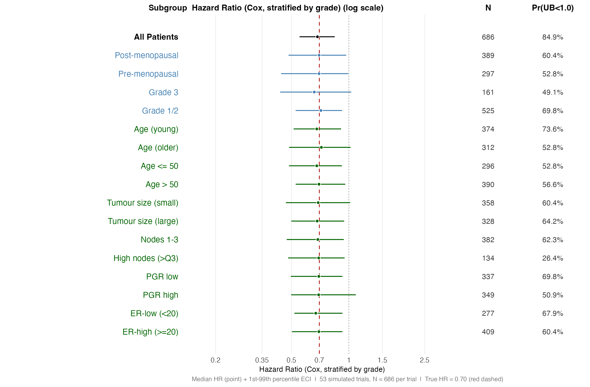
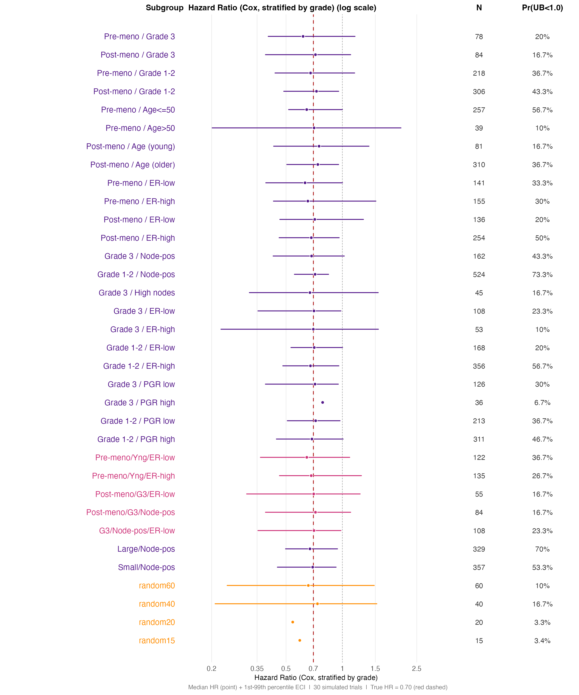
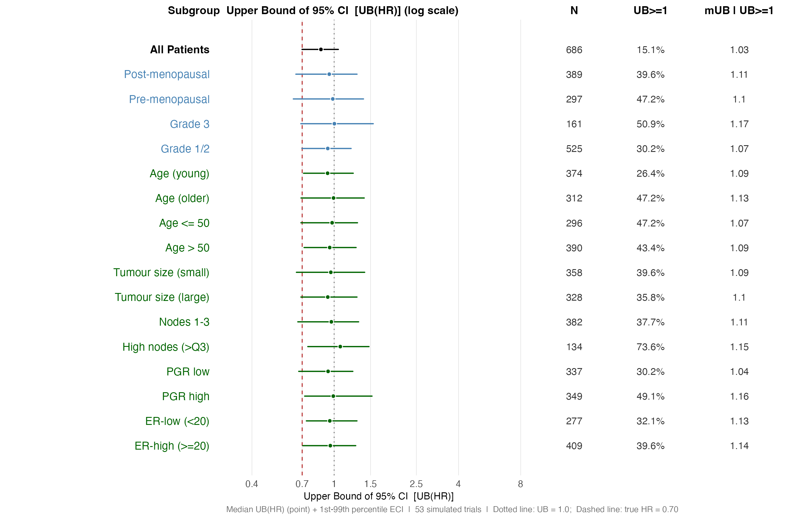
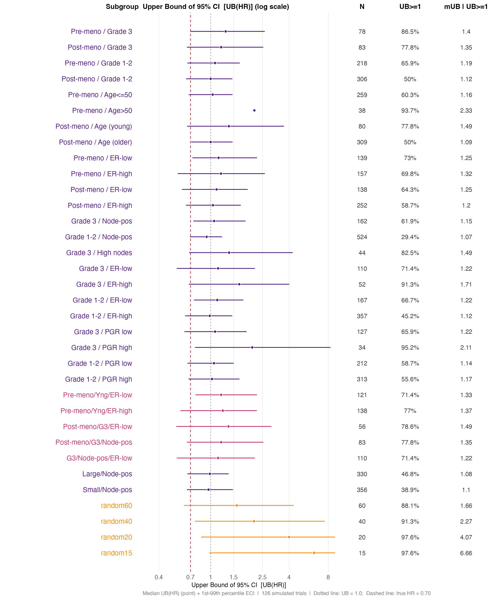

Extreme Subgroup Effects Under a Uniform Treatment Benefit
A Simulation Study Based on Observed Trial Data
Larry F. León
2026-03-18
Source:vignettes/articles/extreme_subgroups.Rmd
extreme_subgroups.RmdOverview
A central concern in exploratory subgroup analysis is the potential for extreme results driven entirely by chance, not by genuine treatment effect heterogeneity. When many subgroups are examined in a single dataset — as is routine in regulatory submissions and trial reports — small subgroups in particular can produce hazard ratio estimates that look dramatic simply because they are noisy. The smaller the subgroup, the wider the confidence interval, and the higher the probability that the upper bound strays far from the truth.
This vignette evaluates that risk directly. We generate thousands of synthetic trials from a data generating mechanism (DGM) with a perfectly uniform treatment benefit — the true hazard ratio is identical for every patient — and ask: how often do standard Cox model analyses produce extreme subgroup results?
The vignette is organised as a complete, self-contained workflow:
Building the DGM — fitting a Weibull AFT model to real data, constructing a super-population, and calibrating the censoring process so that simulated trials reproduce the censoring pattern of the source data. This step establishes the null scenario: a DGM where the true HR is 0.70 for every patient, with no subgroup differential effects.
Running simulated trials — drawing 144 synthetic trial replicates from the null DGM and fitting a stratified Cox model in each pre-defined subgroup.
Characterising the distribution of extreme results — for each subgroup, summarising how variable the HR point estimate is across simulations (the empirical 99% CI, or ECI) and how large the upper confidence bound UB(HR) can become by chance alone. Random benchmark subgroups (
random15,random20,random40,random60) with no clinical meaning serve as calibration anchors, making explicit that clinical subgroups of the same size are statistically indistinguishable from meaningless random groupings.
All examples use the GBSG breast cancer dataset
(survival::gbsg).
Example of Subgroups Under Study
For the study under question, the subgroups and features (size, events, etc) are of course specific to that study. While we are using the GBSG breast cancer study as the case-study, the analyses can be applied or modified based on any study.
An example of pre-defined subgroups, ranging from clinically motivated subpopulations to deliberately artificial ones:
| Subgroup | Basis | Approximate N |
|---|---|---|
| All Patients (ITT) | Full trial | ~700 |
| No liver metastases | Clinical | ~400 |
| BRAF V600E mutant | Molecular | ~300 |
| Age ≤ 65 | Demographic | ~400 |
| Spain, Germany, UK | Country/region | ~60–150 |
| Asia Pacific region | Region | ~100 |
| ECOG 0 / ECOG 1 | Performance status | ~300 each |
| random15, random20 | Randomly sampled | ~15, ~20 |
| random40, random60 | Randomly sampled | ~40, ~60 |
The random* subgroups are the key benchmark. They are
constructed by randomly sampling approximately 20% of subjects and
taking the first 15, 20, 40, and 60 patients:
set.seed(8316951)
sg_ran <- rbinom(nrow(df_analysis), size = 1, prob = 0.2)
temp <- cumsum(sg_ran)
sg_ran15 <- sg_ran
sg_ran15[temp > 15] <- 0 # first 15 selected subjects
df_analysis$random15 <- sg_ran15
sg_ran40 <- sg_ran
sg_ran40[temp > 40] <- 0
df_analysis$random40 <- sg_ran40These subgroups have no clinical meaning whatsoever — their true HR equals the ITT HR of 0.70. Any extreme result they produce is purely a function of their small size and sampling variability.
Six Analysis Variants
For each simulated trial and each subgroup, six Cox model specifications are fitted, covering the range of approaches one might encounter in practice:
| Label | Model specification |
|---|---|
sR |
Stratified by original randomisation factors |
none |
Unstratified |
sX |
Stratified by ECOG status |
sBM* |
Stratified by biomarker above/below optimal cutpoint |
sX+sR |
Stratified by ECOG and randomisation factors |
X+O+sR |
Covariate-adjusted (ECOG, age, sex) + stratified |
Summary Statistics Across Simulations
For each subgroup and analysis, two quantities are accumulated across all simulated trials:
HR point estimate distribution. Reported as median and the 1st–99th percentile interval (the “empirical 99% confidence interval” or ECI). Under truth, the median should be close to 0.70 for every subgroup. The spread of the ECI reflects how variable the estimate is — wider for smaller subgroups.
Upper confidence bound UB(HR). The one-sided 97.5%
upper bound of the Cox 95% confidence interval. Two key thresholds are
tracked: - UB(HR) < 1.0: the upper bound excludes no
treatment effect (nominally “significant” benefit). -
HR < 0.80: the point estimate alone looks like a
meaningful benefit (at the ITT threshold level).
Under the null of a uniform HR = 0.70 with no subgroup effects,
UB(HR) < 1.0 should occur approximately 95% of the time
for the full ITT — it simply reflects power to detect the overall
benefit. For subgroups, the rate falls with sample size, but the
distribution of UB(HR) among those trials where UB(HR) ≥ 1
reveals how extreme a false non-significance result can look.
We note that continuous biomarkers can also be considered. This is more involved and not necessary for uniform effects, but valuable for trials with biomarkers when there is interest in exploring the dynamics of subgroups in the presence of actual biomarker effects (correlated with other patients’ characteristics).
Setting: Uniform Treatment Effect
The DGM is built from a real trial dataset using
generate_aft_dgm_flex() with a single-knot spline biomarker
model. The key feature is that the true log hazard ratio is
constant across all biomarker values:
In the examples below the true overall HR is 0.70 (a moderate benefit). Every subgroup — regardless of how it is defined — shares this same underlying HR. There is no subgroup effect; any apparent finding is a false positive.
The spline parameterisation is specified via
log.hrs = log(c(hr0, hr_k, hr_z)), where hr0,
hr_k, hr_z are the true HRs at biomarker
values 0, the knot k, and an upper anchor
zeta, respectively. Under the uniform scenario all three
are set to the same value:
Installation
The development version of forestsearch can be
installed directly from GitHub using either pak
(recommended) or remotes:
# Using pak (recommended)
# install.packages("pak")
pak::pak("larry-leon/forestsearch")
# Using remotes
# install.packages("remotes")
remotes::install_github("larry-leon/forestsearch")The package depends on weightedsurv,
which is installed automatically from GitHub via the
Remotes field in DESCRIPTION — no separate
step is needed.
Once installed, load the package in the usual way:
Documentation
Full documentation, including function reference and vignettes, is available at the pkgdown site:
The site includes, along with this vignette:
-
Getting Started — end-to-end walkthrough with the
GBSG breast cancer trial (
vignette("forestsearch")) -
Methodology — statistical framework, algorithm
details, and simulation results
(
vignette("methodology")) - Treatment Effect Definitions — marginal HR, average hazard ratio (AHR), and controlled direct effect (CDE) estimands
- Simulation Studies — operating characteristics and published benchmarks
- Reference — all exported functions organised across 16 topic areas
Vignettes can also be accessed locally after installation:
Setup
library(forestsearch)
library(survival)
library(ggplot2)
library(dplyr)
library(patchwork) # assembles gg_forest() panels
theme_set(theme_minimal(base_size = 12))
# Load GBSG data and convert time to months (DGM time scale)
data(gbsg, package = "survival")
gbsg$time_months <- gbsg$rfstime / 30.4375
gbsg$treat <- gbsg$hormon
cat("N =", nrow(gbsg), " Events:", sum(gbsg$status),
sprintf("(%.0f%%)", 100 * mean(gbsg$status)), "\n")## N = 686 Events: 299 (44%)## Median follow-up (months): 35.6## Median event time (months): 21.2Part I — Building the Null Data Generating Mechanism
To evaluate extreme subgroup effects by chance, we need a DGM where
the treatment has a genuine, uniform benefit — so that any subgroup
finding is definitionally a false positive. This section constructs that
DGM from the GBSG data using generate_aft_dgm_flex() with
model = "null" (uniform treatment effect throughout; no
embedded harm subgroup).
Why time-scale consistency matters first
Before fitting anything, confirm that all time parameters are
expressed in the same units. The single most common simulation failure
is building the DGM on days (e.g. rfstime) and then passing
analysis_time in months. The result is a follow-up window
far shorter than the DGM event-time distribution, producing universal
administrative censoring (event_sim = 0 for every
subject).
After building the DGM, this quick check catches the problem:
# exp(mu) is the implied median event time on the DGM time scale.
# It should be close to the observed median event time in months.
cat("Observed median event time (months):",
round(median(gbsg$time_months[gbsg$status == 1]), 1), "\n")## Observed median event time (months): 21.2
cat("(After building dgm, exp(dgm$model_params$mu) should be similar.)\n")## (After building dgm, exp(dgm$model_params$mu) should be similar.)Fitting generate_aft_dgm_flex()
generate_aft_dgm_flex() fits a Weibull AFT model to the
source data and generates a large super population from which
all future trials will be drawn. For the extreme-subgroup evaluation we
use model = "null", which sets the treatment effect to be
identical for every patient — there is no subgroup, so any apparent
finding is a false positive by construction.
The censoring model is estimated from the data by AIC-based selection across Weibull and log-normal models, with and without covariate adjustment. The next section shows how to verify and calibrate this so that simulated trials reproduce the censoring pattern of the source data.
Note that this is an example of a DGM (truth) where there is a subgroup effect (ER-low & pre-menopausal). Simulations under (the null of) uniform treatment benefit are provided below in Part IV
set.seed(42)
dgm <- generate_aft_dgm_flex(
data = gbsg,
continuous_vars = c("age", "size", "nodes", "pgr", "er"),
factor_vars = c("meno", "grade"),
outcome_var = "time_months",
event_var = "status",
treatment_var = "hormon",
subgroup_vars = c("er", "meno"),
subgroup_cuts = list(er = 20, meno = 0), # ER-low & pre-menopausal
model = "alt",
k_inter = 1.5, # moderate interaction
n_super = 5000,
seed = 42,
verbose = FALSE
)
# Key DGM outputs
cat("=== DGM Summary ===\n")## === DGM Summary ===
cat("Time scale : months\n")## Time scale : months## Implied median T : exp(mu) = 57.8 months## Subgroup proportion : 0.188## True HR (harm) : 1.206## True HR (no harm) : 0.729## True HR (overall) : 0.781
cat("Censoring type :",
dgm$model_params$censoring$type, "\n")## Censoring type : weibullPart II — Censoring Diagnostics and Calibration
For the simulation results to be credible, the censoring pattern in each synthetic trial must match what was observed in the source data. If the simulated censoring rate is much higher or lower than the real one, the event counts in small subgroups will be systematically wrong, biasing the HR and UB(HR) distributions we are trying to characterise.
Even with a well-fitted censoring model, the interaction between the
DGM censoring distribution and administrative censoring (the
analysis_time cutoff) can shift the effective censoring
rate substantially away from what was observed. This section covers two
functions that diagnose and correct for this shift before the main
simulation loop is run.
Diagnosing censoring consistency
check_censoring_dgm() compares three censoring summaries
between the DGM reference data (dgm$df_super) and a
simulated dataset: overall censoring rate, censoring-time quantiles
among censored subjects, and the KM-based median censoring time
(estimated by reversing the event indicator so that censored
observations become the “event” of interest).
# Generate a pilot simulated trial (no calibration yet)
sim_pilot <- simulate_from_dgm(
dgm = dgm,
n = 1500,
analysis_time = 84, # months — 7-year follow-up
max_entry = 24, # months — 2-year recruitment window
cens_adjust = 0,
seed = 1
)
cat("Pilot trial: N =", nrow(sim_pilot),
" Event rate:", round(mean(sim_pilot$event_sim), 3), "\n")## Pilot trial: N = 1500 Event rate: 0.419
diag0 <- check_censoring_dgm(
sim_data = sim_pilot,
dgm = dgm,
rate_tol = 0.10,
median_tol = 0.25,
verbose = TRUE
)##
## =========================================================
## Censoring Diagnostic: DGM Reference vs Simulated
## =========================================================
## DGM censoring type : weibull
## DGM mu_cens : 4.0312 [exp = 56.33 time units]
## DGM tau_cens : 0.4246
## Reference n (super) : 5000
## Simulated n : 1500
##
## --- 1. Censoring Rates ---
## Group Ref_rate Sim_rate Diff
## Overall 57.5% 58.1% +0.5 pp
## Arm 0 54.9% 51.5% -3.5 pp
## Arm 1 62.4% 64.7% +2.3 pp
##
## --- 2. Censoring-Time Quantiles (censored subjects only) ---
## Ref: y[event == 0] | Sim: c_time[event_sim == 0]
## Quantile Ref Sim Ratio
## 25% 28.19 27.56 0.978
## 50% 47.05 40.91 0.870
## 75% 60.48 54.85 0.907
## 90% 70.57 65.55 0.929
##
## --- 3. KM Median Censoring Time (reversed event indicator) ---
## Group Ref_median Sim_median Ratio
## Overall 53.51951 46.21436 0.864
## Arm 0 50.16838 48.23731 0.962
## Arm 1 56.57495 45.51736 0.805
##
## --- 4. Implied Time-Scale Check ---
## exp(params$mu) = 57.83 [median outcome time, DGM scale]
## exp(params$censoring$mu)= 56.33 [median censoring time, DGM scale]
## If these values are implausibly large relative to your
## analysis_time, the DGM was likely built on a different time
## scale (e.g. days vs months).
##
## [OK] No substantial discrepancies detected.
## =========================================================Reading the output. Flags warn when the absolute
censoring-rate discrepancy exceeds rate_tol (default 10
percentage points) or when the KM median censoring times differ by more
than median_tol (default 25%). Common causes:
-
Time-scale mismatch — check
exp(dgm$model_params$mu)againstanalysis_time. -
Short
analysis_time— administrative censoring dominates the censoring process, inflating the censoring rate and compressing censoring times. -
Large
cens_adjust— the log-scale shift has moved the DGM censoring distribution far from the original data.
Calibrating cens_adjust
calibrate_cens_adjust() uses uniroot to
find the value of cens_adjust — a log-scale shift applied
to the DGM censoring model — that equates a chosen summary statistic
between the reference and simulated data. Two targets are available:
"rate" (overall censoring rate) and
"km_median" (KM-based median censoring time).
How the objective function works. At each candidate
cens_adjust:
-
simulate_from_dgm()generatesn_evalsynthetic subjects. -
check_censoring_dgm()extracts the target metric. - The objective returns
sim_metric - ref_metric.
uniroot finds the zero crossing. The fixed
seed inside the objective ensures the same candidate is
always evaluated identically, preventing the root-finder from chasing
Monte Carlo noise.
cal <- calibrate_cens_adjust(
dgm = dgm,
target = "rate",
n = 1000,
analysis_time = 84,
max_entry = 24,
seed = 42,
interval = c(-3, 3),
n_eval = 2000,
verbose = TRUE
)##
## -------------------------------------------------------
## calibrate_cens_adjust()
## -------------------------------------------------------
## Target metric : rate
## Reference value : 0.5752
## Search interval : [-3.00, 3.00]
## n_eval per call : 2000
## Tolerance : 1.0e-04
## -------------------------------------------------------
## f(interval[1] = -3.00) = +0.4093
## f(interval[2] = 3.00) = -0.1867
## Searching...
##
## =========================================================
## Censoring Diagnostic: DGM Reference vs Simulated
## =========================================================
## DGM censoring type : weibull
## DGM mu_cens : 4.0312 [exp = 56.33 time units]
## DGM tau_cens : 0.4246
## Reference n (super) : 5000
## Simulated n : 1000
##
## --- 1. Censoring Rates ---
## Group Ref_rate Sim_rate Diff
## Overall 57.5% 55.2% -2.3 pp
## Arm 0 54.9% 50.4% -4.5 pp
## Arm 1 62.4% 60.0% -2.4 pp
##
## --- 2. Censoring-Time Quantiles (censored subjects only) ---
## Ref: y[event == 0] | Sim: c_time[event_sim == 0]
## Quantile Ref Sim Ratio
## 25% 28.19 28.24 1.002
## 50% 47.05 43.15 0.917
## 75% 60.48 58.44 0.966
## 90% 70.57 68.49 0.971
##
## --- 3. KM Median Censoring Time (reversed event indicator) ---
## Group Ref_median Sim_median Ratio
## Overall 53.51951 50.41151 0.942
## Arm 0 50.16838 50.80768 1.013
## Arm 1 56.57495 50.33982 0.890
##
## --- 4. Implied Time-Scale Check ---
## exp(params$mu) = 57.83 [median outcome time, DGM scale]
## exp(params$censoring$mu)= 56.33 [median censoring time, DGM scale]
## If these values are implausibly large relative to your
## analysis_time, the DGM was likely built on a different time
## scale (e.g. days vs months).
##
## [OK] No substantial discrepancies detected.
## =========================================================
##
##
## === Calibration Result ===
## cens_adjust : 0.034371
## Reference rate : 0.5752
## Simulated rate : 0.5520
## Residual : 0.0232
## uniroot iters : 13
## -------------------------------------------------------##
## Calibrated cens_adjust : 0.0344## Reference censoring rate: 0.575## Achieved censoring rate: 0.552## Residual : 0.0232Monotonicity note. The objective is monotone in
cens_adjust for both targets: larger values increase
censoring times (lower rate, higher KM median), smaller values do the
opposite. If uniroot fails, the target lies outside the
interval; widen it and retry.
Verifying the calibrated simulation
sim_cal <- simulate_from_dgm(
dgm = dgm,
n = 1000,
analysis_time = 84,
max_entry = 24,
cens_adjust = cal$cens_adjust,
seed = 123
)
diag_cal <- check_censoring_dgm(
sim_data = sim_cal,
dgm = dgm,
verbose = TRUE,
rate_tol = 0.05,
median_tol = 0.15
)##
## =========================================================
## Censoring Diagnostic: DGM Reference vs Simulated
## =========================================================
## DGM censoring type : weibull
## DGM mu_cens : 4.0312 [exp = 56.33 time units]
## DGM tau_cens : 0.4246
## Reference n (super) : 5000
## Simulated n : 1000
##
## --- 1. Censoring Rates ---
## Group Ref_rate Sim_rate Diff
## Overall 57.5% 57.5% -0.0 pp
## Arm 0 54.9% 52.6% -2.3 pp
## Arm 1 62.4% 62.4% +0.0 pp
##
## --- 2. Censoring-Time Quantiles (censored subjects only) ---
## Ref: y[event == 0] | Sim: c_time[event_sim == 0]
## Quantile Ref Sim Ratio
## 25% 28.19 29.36 1.042
## 50% 47.05 43.83 0.932
## 75% 60.48 59.77 0.988
## 90% 70.57 67.15 0.952
##
## --- 3. KM Median Censoring Time (reversed event indicator) ---
## Group Ref_median Sim_median Ratio
## Overall 53.51951 50.66493 0.947
## Arm 0 50.16838 52.70067 1.050
## Arm 1 56.57495 48.96581 0.866
##
## --- 4. Implied Time-Scale Check ---
## exp(params$mu) = 57.83 [median outcome time, DGM scale]
## exp(params$censoring$mu)= 56.33 [median censoring time, DGM scale]
## If these values are implausibly large relative to your
## analysis_time, the DGM was likely built on a different time
## scale (e.g. days vs months).
##
## [OK] No substantial discrepancies detected.
## =========================================================Part III — Generating Synthetic Trials
With the null DGM built, diagnosed, and calibrated, each simulated
trial is a single call to simulate_from_dgm(). The function
samples from the super population with replacement, assigns treatment,
generates latent survival times from the AFT model, applies the
calibrated censoring model, and truncates at
analysis_time.
The single-trial example below illustrates the output structure. In
the null DGM every patient has the same true HR of 0.70, so
flag_harm is always 0 — there is no embedded subgroup. The
144 replications that drive the extreme-subgroup analysis in Part IV
follow the same pattern, looping over subgroups inside each
replicate.
sim_data <- simulate_from_dgm(
dgm = dgm,
n = 600,
rand_ratio = 1,
analysis_time = 84,
max_entry = 24,
cens_adjust = cal$cens_adjust,
seed = 100
)
cat("Simulated trial: N =", nrow(sim_data), "\n")## Simulated trial: N = 600
cat("Treatment allocation:",
table(sim_data$treat_sim)[["0"]], "control /",
table(sim_data$treat_sim)[["1"]], "experimental\n")## Treatment allocation: 300 control / 300 experimental## Overall event rate : 0.412
cat("Event rate (harm subgroup):",
round(mean(sim_data$event_sim[sim_data$flag_harm == 1]), 3), "\n")## Event rate (harm subgroup): 0.57## Event rate (no-harm) : 0.374
library(survival)
# KM for overall, harm subgroup, and complementary subgroup
km_all <- survfit(Surv(y_sim, event_sim) ~ treat_sim,
data = sim_data)
km_harm <- survfit(Surv(y_sim, event_sim) ~ treat_sim,
data = subset(sim_data, flag_harm == 1))
km_noharm <- survfit(Surv(y_sim, event_sim) ~ treat_sim,
data = subset(sim_data, flag_harm == 0))
# Quick summary of true vs observed HRs
cox_all <- coxph(Surv(y_sim, event_sim) ~ treat_sim, data = sim_data)
cox_harm <- coxph(Surv(y_sim, event_sim) ~ treat_sim,
data = subset(sim_data, flag_harm == 1))
cox_noharm <- coxph(Surv(y_sim, event_sim) ~ treat_sim,
data = subset(sim_data, flag_harm == 0))
results_df <- data.frame(
Subgroup = c("ITT", "Harm (true)", "No-harm (true)"),
N = c(nrow(sim_data),
sum(sim_data$flag_harm == 1),
sum(sim_data$flag_harm == 0)),
True_HR = round(c(dgm$hazard_ratios$overall,
dgm$hazard_ratios$harm_subgroup,
dgm$hazard_ratios$no_harm_subgroup), 3),
Observed_HR = round(exp(c(coef(cox_all),
coef(cox_harm),
coef(cox_noharm))), 3)
)
print(results_df)## Subgroup N True_HR Observed_HR
## 1 ITT 600 0.781 0.984
## 2 Harm (true) 114 1.206 2.232
## 3 No-harm (true) 486 0.729 0.782Part IV — Main Results: Extreme Subgroup Effects Under a Uniform Treatment Benefit
The Core Question
Parts I–III established how to build a null DGM and generate
synthetic trials from it. We now use those tools of
forestsearch: when many subgroups are examined in a
trial with a perfectly uniform treatment benefit, how extreme can a
standard Cox analysis look by chance alone?
We generate 144 synthetic trials from the null DGM and fit a stratified Cox model in each pre-defined subgroup in every trial. Two output statistics are accumulated:
The HR point estimate distribution across trials — summarised as the median and the 1st–99th percentile interval (the empirical 99% confidence interval, ECI). The median should track 0.70 for every subgroup; the width of the ECI reveals how noisy a single-trial estimate is.
-
The upper confidence bound UB(HR) — the upper end of the Cox 95%
- We track
Pr(UB < 1.0)(power to show nominal benefit) and the conditional distribution of UB(HR) given UB ≥ 1 (how extreme a “failure to show benefit” looks in the worst-case trial).
- We track
The random* subgroups (no clinical basis, same true HR
as everyone else) serve as calibration anchors. Any clinical subgroup of
the same N has an identical chance distribution — the clinical rationale
for the grouping provides no statistical protection.
Setting: Uniform Treatment Effect
The DGM is built from the GBSG breast cancer trial using
generate_aft_dgm_flex(). The key feature is that the true
log hazard ratio is constant across all patients:
In the examples below the true overall HR is 0.70 (a moderate benefit). Every subgroup — regardless of how it is defined — shares this same underlying HR.
set.seed(99)
dgm_null <- generate_aft_dgm_flex(
data = gbsg,
continuous_vars = c("age", "size", "nodes", "pgr", "er"),
factor_vars = c("meno", "grade"),
outcome_var = "time_months",
event_var = "status",
treatment_var = "hormon",
subgroup_vars = NULL, # no embedded subgroup — uniform effect throughout
model = "null",
n_super = 5000,
seed = 99,
verbose = FALSE
)
cat("Null DGM | true overall HR:",
round(dgm_null$hazard_ratios$overall, 3),
" | implied median event time:",
round(exp(dgm_null$model_params$mu), 1), "months\n")## Null DGM | true overall HR: 0.757 | implied median event time: 55.5 monthsSubgroups Under Study
Each simulated trial analyses the same set of pre-defined subgroups, ranging from clinically motivated subpopulations to deliberately artificial ones.
The random* subgroups are the key
benchmark. They are constructed by randomly sampling approximately 20%
of subjects and taking the first 15, 20, 40, and 60 patients from that
draw:
set.seed(8316951)
gbsg$flag_itt <- 1L
# ── Scalar cut-points for continuous variables ────────────────────────────
# Computed once from the observed data; re-exposed as columns inside each
# simulated df_s so that subset expressions like "age <= age_med" resolve.
age_med <- median(gbsg$age) # ~53 yrs
size_med <- median(gbsg$size) # ~25 mm
nodes_q3 <- quantile(gbsg$nodes, 0.75) # top-quartile node count (~5)
pgr_med <- median(gbsg$pgr) # median PGR
er_cut <- 20 # ER-low clinical threshold (fmol / mg)
subgroups <- list(
# ── A. Full trial (ITT) ─────────────────────────────────────────────────
list(id = "flag_itt == 1", name = "All Patients", grp = "ITT"),
# ── B. Single clinical / factor subgroups ───────────────────────────────
list(id = "meno == 1", name = "Post-menopausal", grp = "Clinical"),
list(id = "meno == 0", name = "Pre-menopausal", grp = "Clinical"),
list(id = "grade == 3", name = "Grade 3", grp = "Clinical"),
list(id = "grade != 3", name = "Grade 1/2", grp = "Clinical"),
# ── C. Single continuous-variable cuts ──────────────────────────────────
list(id = "age <= age_med", name = "Age (young)", grp = "Continuous"),
list(id = "age > age_med", name = "Age (older)", grp = "Continuous"),
list(id = "age <= 50", name = "Age <= 50", grp = "Continuous"),
list(id = "age > 50", name = "Age > 50", grp = "Continuous"),
list(id = "size <= size_med", name = "Tumour size (small)", grp = "Continuous"),
list(id = "size > size_med", name = "Tumour size (large)", grp = "Continuous"),
list(id = "nodes == 0", name = "Node-negative", grp = "Continuous"),
list(id = "nodes > 0 & nodes <= 3", name = "Nodes 1-3", grp = "Continuous"),
list(id = "nodes > nodes_q3", name = "High nodes (>Q3)", grp = "Continuous"),
list(id = "pgr <= pgr_med", name = "PGR low", grp = "Continuous"),
list(id = "pgr > pgr_med", name = "PGR high", grp = "Continuous"),
list(id = "er <= er_cut", name = "ER-low (<20)", grp = "Continuous"),
list(id = "er > er_cut", name = "ER-high (>=20)", grp = "Continuous"),
# ── D. Menopausal status x Grade (2x2) ──────────────────────────────────
list(id = "meno == 0 & grade == 3", name = "Pre-meno / Grade 3", grp = "Interaction: meno x grade"),
list(id = "meno == 1 & grade == 3", name = "Post-meno / Grade 3", grp = "Interaction: meno x grade"),
list(id = "meno == 0 & grade != 3", name = "Pre-meno / Grade 1-2", grp = "Interaction: meno x grade"),
list(id = "meno == 1 & grade != 3", name = "Post-meno / Grade 1-2", grp = "Interaction: meno x grade"),
# ── E. Menopausal status x Age ───────────────────────────────────────────
list(id = "meno == 0 & age <= 50", name = "Pre-meno / Age<=50", grp = "Interaction: meno x age"),
list(id = "meno == 0 & age > 50", name = "Pre-meno / Age>50", grp = "Interaction: meno x age"),
list(id = "meno == 1 & age <= age_med", name = "Post-meno / Age (young)", grp = "Interaction: meno x age"),
list(id = "meno == 1 & age > age_med", name = "Post-meno / Age (older)", grp = "Interaction: meno x age"),
# ── F. Menopausal status x ER status ────────────────────────────────────
list(id = "meno == 0 & er <= er_cut", name = "Pre-meno / ER-low", grp = "Interaction: meno x ER"),
list(id = "meno == 0 & er > er_cut", name = "Pre-meno / ER-high", grp = "Interaction: meno x ER"),
list(id = "meno == 1 & er <= er_cut", name = "Post-meno / ER-low", grp = "Interaction: meno x ER"),
list(id = "meno == 1 & er > er_cut", name = "Post-meno / ER-high", grp = "Interaction: meno x ER"),
# ── G. Grade x Node status ───────────────────────────────────────────────
list(id = "grade == 3 & nodes == 0", name = "Grade 3 / Node-neg", grp = "Interaction: grade x nodes"),
list(id = "grade == 3 & nodes > 0", name = "Grade 3 / Node-pos", grp = "Interaction: grade x nodes"),
list(id = "grade != 3 & nodes == 0", name = "Grade 1-2 / Node-neg", grp = "Interaction: grade x nodes"),
list(id = "grade != 3 & nodes > 0", name = "Grade 1-2 / Node-pos", grp = "Interaction: grade x nodes"),
list(id = "grade == 3 & nodes > nodes_q3", name = "Grade 3 / High nodes", grp = "Interaction: grade x nodes"),
# ── H. Grade x ER status ─────────────────────────────────────────────────
list(id = "grade == 3 & er <= er_cut", name = "Grade 3 / ER-low", grp = "Interaction: grade x ER"),
list(id = "grade == 3 & er > er_cut", name = "Grade 3 / ER-high", grp = "Interaction: grade x ER"),
list(id = "grade != 3 & er <= er_cut", name = "Grade 1-2 / ER-low", grp = "Interaction: grade x ER"),
list(id = "grade != 3 & er > er_cut", name = "Grade 1-2 / ER-high", grp = "Interaction: grade x ER"),
# ── I. Grade x PGR ──────────────────────────────────────────────────────
list(id = "grade == 3 & pgr <= pgr_med", name = "Grade 3 / PGR low", grp = "Interaction: grade x PGR"),
list(id = "grade == 3 & pgr > pgr_med", name = "Grade 3 / PGR high", grp = "Interaction: grade x PGR"),
list(id = "grade != 3 & pgr <= pgr_med", name = "Grade 1-2 / PGR low", grp = "Interaction: grade x PGR"),
list(id = "grade != 3 & pgr > pgr_med", name = "Grade 1-2 / PGR high", grp = "Interaction: grade x PGR"),
# ── J. Age x ER x Menopausal (3-way) ───────────────────────────────────
list(id = "meno == 0 & age <= 50 & er <= er_cut", name = "Pre-meno/Yng/ER-low", grp = "3-way"),
list(id = "meno == 0 & age <= 50 & er > er_cut", name = "Pre-meno/Yng/ER-high", grp = "3-way"),
list(id = "meno == 1 & grade == 3 & er <= er_cut", name = "Post-meno/G3/ER-low", grp = "3-way"),
list(id = "meno == 1 & grade == 3 & nodes > 0", name = "Post-meno/G3/Node-pos", grp = "3-way"),
list(id = "grade == 3 & nodes > 0 & er <= er_cut", name = "G3/Node-pos/ER-low", grp = "3-way"),
# ── K. Size x Node combinations ─────────────────────────────────────────
list(id = "size > size_med & nodes > 0", name = "Large/Node-pos", grp = "Interaction: size x nodes"),
list(id = "size > size_med & nodes == 0", name = "Large/Node-neg", grp = "Interaction: size x nodes"),
list(id = "size <= size_med & nodes > 0", name = "Small/Node-pos", grp = "Interaction: size x nodes"),
list(id = "size <= size_med & nodes == 0", name = "Small/Node-neg", grp = "Interaction: size x nodes"),
# ── L. Random benchmark subgroups ───────────────────────────────────────
# No clinical meaning; regenerated each simulation. Calibrate variability
# by size against the clinical and interaction subgroups above.
list(id = "random60 == 1", name = "random60", grp = "Random (N~60)"),
list(id = "random40 == 1", name = "random40", grp = "Random (N~40)"),
list(id = "random20 == 1", name = "random20", grp = "Random (N~20)"),
list(id = "random15 == 1", name = "random15", grp = "Random (N~15)")
)
# ── Show observed sizes from GBSG ────────────────────────────────────────
# Scalar cut-points exposed as columns so eval() resolves them correctly.
gbsg_eval <- gbsg
gbsg_eval$age_med <- age_med
gbsg_eval$size_med <- size_med
gbsg_eval$nodes_q3 <- nodes_q3
gbsg_eval$pgr_med <- pgr_med
gbsg_eval$er_cut <- er_cut
gbsg_eval$random60 <- 0L
gbsg_eval$random40 <- 0L
gbsg_eval$random20 <- 0L
gbsg_eval$random15 <- 0L
sg_sizes <- sapply(subgroups, function(s) {
tryCatch(
sum(eval(parse(text = s$id), envir = gbsg_eval)),
error = function(e) NA_integer_
)
})
is_random_sg <- grepl("^random", sapply(subgroups, `[[`, "name"))
rand_sizes <- c(60L, 40L, 20L, 15L)
sg_overview <- data.frame(
Subgroup = sapply(subgroups, `[[`, "name"),
Group = sapply(subgroups, `[[`, "grp"),
N_source = ifelse(is_random_sg, rand_sizes[cumsum(is_random_sg)], sg_sizes),
stringsAsFactors = FALSE
)
print(sg_overview, row.names = FALSE)## Subgroup Group N_source
## All Patients ITT 686
## Post-menopausal Clinical 396
## Pre-menopausal Clinical 290
## Grade 3 Clinical 161
## Grade 1/2 Clinical 525
## Age (young) Continuous 363
## Age (older) Continuous 323
## Age <= 50 Continuous 289
## Age > 50 Continuous 397
## Tumour size (small) Continuous 353
## Tumour size (large) Continuous 333
## Node-negative Continuous 0
## Nodes 1-3 Continuous 376
## High nodes (>Q3) Continuous 143
## PGR low Continuous 343
## PGR high Continuous 343
## ER-low (<20) Continuous 272
## ER-high (>=20) Continuous 414
## Pre-meno / Grade 3 Interaction: meno x grade 74
## Post-meno / Grade 3 Interaction: meno x grade 87
## Pre-meno / Grade 1-2 Interaction: meno x grade 216
## Post-meno / Grade 1-2 Interaction: meno x grade 309
## Pre-meno / Age<=50 Interaction: meno x age 255
## Pre-meno / Age>50 Interaction: meno x age 35
## Post-meno / Age (young) Interaction: meno x age 77
## Post-meno / Age (older) Interaction: meno x age 319
## Pre-meno / ER-low Interaction: meno x ER 134
## Pre-meno / ER-high Interaction: meno x ER 156
## Post-meno / ER-low Interaction: meno x ER 138
## Post-meno / ER-high Interaction: meno x ER 258
## Grade 3 / Node-neg Interaction: grade x nodes 0
## Grade 3 / Node-pos Interaction: grade x nodes 161
## Grade 1-2 / Node-neg Interaction: grade x nodes 0
## Grade 1-2 / Node-pos Interaction: grade x nodes 525
## Grade 3 / High nodes Interaction: grade x nodes 46
## Grade 3 / ER-low Interaction: grade x ER 106
## Grade 3 / ER-high Interaction: grade x ER 55
## Grade 1-2 / ER-low Interaction: grade x ER 166
## Grade 1-2 / ER-high Interaction: grade x ER 359
## Grade 3 / PGR low Interaction: grade x PGR 127
## Grade 3 / PGR high Interaction: grade x PGR 34
## Grade 1-2 / PGR low Interaction: grade x PGR 216
## Grade 1-2 / PGR high Interaction: grade x PGR 309
## Pre-meno/Yng/ER-low 3-way 116
## Pre-meno/Yng/ER-high 3-way 139
## Post-meno/G3/ER-low 3-way 58
## Post-meno/G3/Node-pos 3-way 87
## G3/Node-pos/ER-low 3-way 106
## Large/Node-pos Interaction: size x nodes 333
## Large/Node-neg Interaction: size x nodes 0
## Small/Node-pos Interaction: size x nodes 353
## Small/Node-neg Interaction: size x nodes 0
## random60 Random (N~60) 60
## random40 Random (N~40) 40
## random20 Random (N~20) 20
## random15 Random (N~15) 15##
## Total subgroups: 56These random* subgroups have no clinical meaning
whatsoever — their true HR equals the ITT HR of 0.70. Any extreme result
they produce is purely a function of their small size and sampling
variability. Placing them alongside clinical subgroups of similar size
makes explicit how much of the spread in those clinical findings is
attributable to noise alone.
Summary Statistics Across 144 Simulations
For each subgroup the primary analysis — Cox model stratified by the
randomisation factor (grade) — is fitted in every simulated
trial. Two quantities are accumulated:
HR point estimate distribution. Reported as median and the 1st–99th percentile interval (the empirical 99% confidence interval, ECI). Under truth, the median should be close to 0.70 for every subgroup. The spread of the ECI reflects how variable the estimate is — wider for smaller subgroups.
Upper confidence bound UB(HR). The upper end of the Cox 95% confidence interval. Two thresholds are tracked:
-
Pr(UB < 1.0): the proportion of trials in which the upper bound excludes no treatment effect, i.e., the subgroup shows a nominally significant benefit. For the full ITT this should be close to the trial power (~95%); for small subgroups it falls substantially. - Conditional distribution of UB(HR) given UB ≥ 1: when the upper bound fails to exclude no effect, how large does it become? This is what a safety reviewer sees in the worst-case trial for that subgroup.
Simulation Loop
cal_null <- calibrate_cens_adjust(
dgm = dgm_null,
target = "rate",
n = 800,
analysis_time = 84,
max_entry = 24,
seed = 42,
n_eval = 1500,
verbose = FALSE
)
cat("Calibrated cens_adjust:", round(cal_null$cens_adjust, 4),
" | Target censoring rate:", round(cal_null$ref_value, 3), "\n")## Calibrated cens_adjust: 0.1047 | Target censoring rate: 0.576
sg_names <- sapply(subgroups, `[[`, "name")
sg_ids <- sapply(subgroups, `[[`, "id")
n_sg <- length(subgroups)
# Fit stratified Cox, return c(HR point estimate, upper 95% CI bound)
cox_sR <- function(data) {
fit <- tryCatch(
coxph(Surv(y_sim, event_sim) ~ treat_sim + strata(grade), data = data),
error = function(e) NULL
)
if (is.null(fit) || nrow(summary(fit)$conf.int) == 0)
return(c(NA_real_, NA_real_))
ci <- summary(fit)$conf.int[1, ]
c(ci["exp(coef)"], ci["upper .95"])
}
# Storage: HR point estimates and upper 95% confidence bounds
sim_hrs <- matrix(NA_real_, n_sims_null, n_sg, dimnames = list(NULL, sg_names))
sim_ubs <- matrix(NA_real_, n_sims_null, n_sg, dimnames = list(NULL, sg_names))
sim_ns <- matrix(NA_real_, n_sims_null, n_sg, dimnames = list(NULL, sg_names))
for (ss in seq_len(n_sims_null)) {
df_s <- simulate_from_dgm(
dgm = dgm_null,
n = nrow(gbsg),
analysis_time = 84,
max_entry = 24,
cens_adjust = cal_null$cens_adjust,
seed = ss
)
df_s$flag_itt <- 1L
# Make quantile cut-points available as scalar variables in the eval
# environment so expressions like "size <= size_med" resolve correctly.
# Expose scalar cut-points as columns so subset expressions resolve.
df_s$age_med <- age_med
df_s$size_med <- size_med
df_s$nodes_q3 <- nodes_q3
df_s$pgr_med <- pgr_med
df_s$er_cut <- er_cut
# Regenerate random benchmark subgroups for this simulated trial.
# Random subgroups are re-sampled each iteration: their purpose is to
# benchmark the variability of a subgroup of a given size with no true
# treatment effect heterogeneity — exactly what each simulated trial provides.
set.seed(ss + 1e6L)
n_s <- nrow(df_s)
r_idx <- sample.int(n_s, min(60L, n_s), replace = FALSE)
df_s$random60 <- as.integer(seq_len(n_s) %in% r_idx)
df_s$random40 <- as.integer(seq_len(n_s) %in% r_idx[seq_len(min(40L, length(r_idx)))])
df_s$random20 <- as.integer(seq_len(n_s) %in% r_idx[seq_len(min(20L, length(r_idx)))])
df_s$random15 <- as.integer(seq_len(n_s) %in% r_idx[seq_len(min(15L, length(r_idx)))])
for (gg in seq_len(n_sg)) {
df_sg <- tryCatch(
subset(df_s, eval(parse(text = sg_ids[[gg]]))),
error = function(e) NULL
)
if (is.null(df_sg) || nrow(df_sg) < 5) next
sim_ns[ss, gg] <- nrow(df_sg)
r <- cox_sR(df_sg)
sim_hrs[ss, gg] <- r[1]
sim_ubs[ss, gg] <- r[2]
}
}
cat("Simulations completed:", n_sims_null, "\n")## Simulations completed: 144Results
Summary table
# Median HR and 1-99th percentile ECI across simulations
hr_q <- t(apply(sim_hrs, 2, quantile, probs = c(0.01, 0.50, 0.99),
na.rm = TRUE))
ub_q <- t(apply(sim_ubs, 2, quantile, probs = c(0.01, 0.50, 0.99),
na.rm = TRUE))
# n_valid: number of simulations where Cox estimation succeeded
n_valid <- apply(sim_hrs, 2, function(x) sum(!is.na(x)))
pct_valid <- round(100 * n_valid / n_sims_null, 1)
mean_n <- round(apply(sim_ns, 2, mean, na.rm = TRUE))
# Proportions denominated by n_valid (not n_sims_null) so NAs from
# estimation failures are excluded; they are separately reported.
pr_hr_lt080 <- apply(sim_hrs, 2, function(x) mean(x < 0.80, na.rm = TRUE))
pr_ub_lt1 <- apply(sim_ubs, 2, function(x) mean(x < 1.0, na.rm = TRUE))
pr_ub_ge1 <- 1 - pr_ub_lt1
# Conditional distribution of UB given UB >= 1
cond_ub <- t(apply(sim_ubs, 2, function(x) {
xx <- x[!is.na(x) & x >= 1.0]
if (length(xx) < 2) return(c(NA_real_, NA_real_, NA_real_))
quantile(xx, probs = c(0.50, 0.75, 0.99))
}))
fmt_pct <- function(x) ifelse(is.nan(x), "-", paste0(round(100 * x, 1), "%"))
fmt_num <- function(x) ifelse(is.na(x), "-", as.character(round(x, 2)))
results_tbl <- data.frame(
Subgroup = sg_names,
Mean_N = ifelse(is.nan(mean_n), "-", as.character(mean_n)),
N_valid = paste0(n_valid, " (", pct_valid, "%)"),
HR_ECI = ifelse(is.na(hr_q[,2]), "-",
paste0(round(hr_q[,2],2),
" (", round(hr_q[,1],2), ", ",
round(hr_q[,3],2), ")")),
Pr_HR_lt080 = fmt_pct(pr_hr_lt080),
Pr_UB_lt1 = fmt_pct(pr_ub_lt1),
Pr_UB_ge1 = fmt_pct(pr_ub_ge1),
Med_UB_cond = fmt_num(cond_ub[, 1]),
P99_UB_cond = fmt_num(cond_ub[, 3]),
stringsAsFactors = FALSE
)
colnames(results_tbl) <- c(
"Subgroup", "N", "#(% converged)",
"Median HR (1st, 99th ECI)",
"Pr(HR<0.80)", "Pr(UB<1.0)", "Pr(UB>=1.0)",
"Med UB|UB>=1", "P99 UB|UB>=1"
)
print(results_tbl, row.names = FALSE)## Subgroup N #(% converged) Median HR (1st, 99th ECI)
## All Patients 686 144 (100%) 0.7 (0.54, 0.87)
## Post-menopausal 390 144 (100%) 0.69 (0.47, 0.97)
## Pre-menopausal 296 144 (100%) 0.71 (0.45, 1.03)
## Grade 3 161 144 (100%) 0.69 (0.46, 1.18)
## Grade 1/2 525 144 (100%) 0.71 (0.53, 0.93)
## Age (young) 373 144 (100%) 0.69 (0.5, 0.97)
## Age (older) 313 144 (100%) 0.71 (0.49, 1.02)
## Age <= 50 295 144 (100%) 0.71 (0.48, 0.98)
## Age > 50 391 144 (100%) 0.7 (0.51, 0.96)
## Tumour size (small) 356 144 (100%) 0.69 (0.47, 1.04)
## Tumour size (large) 330 144 (100%) 0.71 (0.47, 1.05)
## Node-negative - 0 (0%) -
## Nodes 1-3 382 144 (100%) 0.7 (0.47, 1.01)
## High nodes (>Q3) 133 144 (100%) 0.68 (0.44, 1.03)
## PGR low 339 144 (100%) 0.7 (0.5, 0.93)
## PGR high 347 144 (100%) 0.7 (0.49, 1.13)
## ER-low (<20) 277 144 (100%) 0.69 (0.47, 0.99)
## ER-high (>=20) 409 144 (100%) 0.7 (0.5, 1.01)
## Pre-meno / Grade 3 78 144 (100%) 0.68 (0.36, 1.37)
## Post-meno / Grade 3 83 144 (100%) 0.66 (0.35, 1.43)
## Pre-meno / Grade 1-2 218 144 (100%) 0.7 (0.43, 1.15)
## Post-meno / Grade 1-2 307 144 (100%) 0.69 (0.45, 1.03)
## Pre-meno / Age<=50 258 144 (100%) 0.71 (0.46, 1.01)
## Pre-meno / Age>50 38 144 (100%) 0.7 (0.13, 2.87)
## Post-meno / Age (young) 80 144 (100%) 0.71 (0.31, 1.76)
## Post-meno / Age (older) 310 144 (100%) 0.7 (0.47, 1.04)
## Pre-meno / ER-low 139 144 (100%) 0.68 (0.41, 1.33)
## Pre-meno / ER-high 157 144 (100%) 0.71 (0.32, 1.48)
## Post-meno / ER-low 138 144 (100%) 0.68 (0.36, 1.2)
## Post-meno / ER-high 253 144 (100%) 0.69 (0.42, 1.13)
## Grade 3 / Node-neg - 0 (0%) -
## Grade 3 / Node-pos 161 144 (100%) 0.69 (0.46, 1.18)
## Grade 1-2 / Node-neg - 0 (0%) -
## Grade 1-2 / Node-pos 525 144 (100%) 0.71 (0.53, 0.93)
## Grade 3 / High nodes 44 144 (100%) 0.66 (0.27, 1.88)
## Grade 3 / ER-low 110 144 (100%) 0.67 (0.32, 1.26)
## Grade 3 / ER-high 52 144 (100%) 0.72 (0.28, 1.66)
## Grade 1-2 / ER-low 167 144 (100%) 0.7 (0.43, 1.12)
## Grade 1-2 / ER-high 358 144 (100%) 0.7 (0.46, 1.04)
## Grade 3 / PGR low 127 144 (100%) 0.67 (0.39, 1.16)
## Grade 3 / PGR high 34 144 (100%) 0.74 (0.07, 2.36)
## Grade 1-2 / PGR low 212 144 (100%) 0.71 (0.44, 1.02)
## Grade 1-2 / PGR high 313 144 (100%) 0.69 (0.46, 1.12)
## Pre-meno/Yng/ER-low 120 144 (100%) 0.7 (0.44, 1.36)
## Pre-meno/Yng/ER-high 138 144 (100%) 0.71 (0.32, 1.28)
## Post-meno/G3/ER-low 56 144 (100%) 0.65 (0.25, 1.41)
## Post-meno/G3/Node-pos 83 144 (100%) 0.66 (0.35, 1.43)
## G3/Node-pos/ER-low 110 144 (100%) 0.67 (0.32, 1.26)
## Large/Node-pos 330 144 (100%) 0.71 (0.47, 1.05)
## Large/Node-neg - 0 (0%) -
## Small/Node-pos 356 144 (100%) 0.69 (0.47, 1.04)
## Small/Node-neg - 0 (0%) -
## random60 60 144 (100%) 0.7 (0.22, 1.69)
## random40 40 144 (100%) 0.77 (0.2, 2.43)
## random20 20 144 (100%) 0.77 (0, 186585809.97)
## random15 15 143 (99.3%) 0.77 (0, 3445148521.57)
## Pr(HR<0.80) Pr(UB<1.0) Pr(UB>=1.0) Med UB|UB>=1 P99 UB|UB>=1
## 85.4% 84% 16% 1.04 1.11
## 81.9% 63.9% 36.1% 1.08 1.44
## 74.3% 45.8% 54.2% 1.13 1.49
## 77.1% 39.6% 60.4% 1.15 1.9
## 79.9% 70.8% 29.2% 1.09 1.24
## 79.9% 63.2% 36.8% 1.12 1.47
## 79.2% 54.2% 45.8% 1.1 1.58
## 77.1% 47.9% 52.1% 1.13 1.46
## 80.6% 63.9% 36.1% 1.08 1.48
## 81.2% 61.8% 38.2% 1.1 1.5
## 79.2% 54.9% 45.1% 1.08 1.49
## - - - - -
## 77.1% 55.6% 44.4% 1.12 1.47
## 77.8% 36.8% 63.2% 1.18 1.59
## 84% 66.7% 33.3% 1.07 1.33
## 76.4% 50% 50% 1.15 1.68
## 78.5% 58.3% 41.7% 1.12 1.43
## 79.2% 58.3% 41.7% 1.09 1.44
## 68.8% 12.5% 87.5% 1.4 2.59
## 66% 25% 75% 1.35 2.57
## 72.9% 33.3% 66.7% 1.18 1.89
## 75% 52.1% 47.9% 1.12 1.59
## 72.9% 39.6% 60.4% 1.16 1.5
## 60.4% 6.2% 93.8% 2.37 22.41
## 70.1% 21.5% 78.5% 1.48 3.65
## 79.2% 52.1% 47.9% 1.1 1.6
## 69.4% 28.5% 71.5% 1.25 2.39
## 66% 29.2% 70.8% 1.35 2.69
## 72.9% 38.2% 61.8% 1.24 1.96
## 68.8% 43.1% 56.9% 1.2 1.75
## - - - - -
## 77.1% 39.6% 60.4% 1.15 1.9
## - - - - -
## 79.9% 70.8% 29.2% 1.09 1.24
## 71.5% 17.4% 82.6% 1.45 4.3
## 74.3% 31.2% 68.8% 1.22 2.22
## 59.7% 9% 91% 1.77 4.04
## 71.5% 35.4% 64.6% 1.22 1.79
## 77.8% 55.6% 44.4% 1.12 1.47
## 76.4% 35.4% 64.6% 1.22 1.89
## 54.9% 4.9% 95.1% 2.2 Inf
## 76.4% 42.4% 57.6% 1.15 1.52
## 70.8% 46.5% 53.5% 1.19 1.67
## 68.8% 27.8% 72.2% 1.32 2.37
## 67.4% 21.5% 78.5% 1.37 2.25
## 68.8% 22.2% 77.8% 1.48 2.96
## 66% 25% 75% 1.35 2.57
## 74.3% 31.2% 68.8% 1.22 2.22
## 79.2% 54.9% 45.1% 1.08 1.49
## - - - - -
## 81.2% 61.8% 38.2% 1.1 1.5
## - - - - -
## 62.5% 11.8% 88.2% 1.65 4.31
## 50.7% 9% 91% 2.21 7.46
## 52.1% 2.8% 97.2% 4.05 Inf
## 53.1% 2.8% 97.2% 6.76 InfReading the table. Every row shares the same true HR
= 0.70, so the median of the HR ECI should be close to 0.70 throughout —
confirming the Cox model is unbiased. The spread of the ECI is
what changes: narrow for the ITT and large clinical subgroups, wide for
random20 and random15.
Pr(UB < 1.0) measures power for the full trial; it falls
sharply with subgroup size. P99 UB | UB ≥ 1 answers the
question a safety reviewer faces in the worst 1% of trials: how
large can the upper bound get when the subgroup fails to show a
significant benefit? For random15 the answer routinely
exceeds 5.0; for random40 it commonly exceeds 3.0.
Forest plot: HR point estimate distributions
Each row shows one subgroup. The point is the median HR across 144
simulations; the line spans the 1st–99th percentile ECI. The red dashed
line marks the true HR = 0.70; the grey dotted line marks HR = 1.0.
random* benchmarks (orange) are shown alongside same-sized
clinical subgroups (blue) so that the comparison is immediate.
# =============================================================================
# Forest Plot Sizing Parameters — edit here to resize all four panels
# =============================================================================
#
# HOW SIZING WORKS WITH gg_forest()
# ──────────────────────────────────
# gg_forest() uses ggplot2 + patchwork. Unlike forestploter, there is NO
# hidden scaling. Row height is simply:
#
# row_height_in = fig.height / n_rows
#
# So to set a target row height (e.g. 0.45 in):
# fig.height = n_rows × 0.45 + overhead_in
#
# where overhead_in ≈ 1.5 in covers the title, x-axis, and caption.
# ─────────────────────────────────────────────────────────────────────────────
fp_row_height <- 0.45 # in — target height per row (increase to spread rows)
fp_overhead_in <- 1.5 # in — fixed overhead (title + x-axis + footnote)
fp_base_size <- 14 # pt — ggplot2 base font size (controls ALL text sizes)
fp_point_size <- 2.2 # relative size of the median point symbol
fp_line_size <- 0.75 # line width of CI whiskers
# ── Colour map (used by all four panels) ──────────────────────────────────
cat_cols <- c(
"ITT" = "black",
"Clinical" = "steelblue",
"Continuous" = "darkgreen",
"Interaction" = "purple4",
"3-way" = "violetred3",
"Random" = "darkorange"
)
# ── Recommended fig.height for each panel ─────────────────────────────────
cat_ok <- dplyr::case_when(
sapply(subgroups, `[[`, "grp") == "ITT" ~ "ITT",
sapply(subgroups, `[[`, "grp") == "Clinical" ~ "Clinical",
sapply(subgroups, `[[`, "grp") == "Continuous" ~ "Continuous",
grepl("^Interaction", sapply(subgroups, `[[`, "grp")) ~ "Interaction",
sapply(subgroups, `[[`, "grp") == "3-way" ~ "3-way",
TRUE ~ "Random"
)
ok <- !is.na(hr_q[, 2])
ok_ub <- !is.na(ub_q[, 2])
single_cats <- c("ITT", "Clinical", "Continuous")
combo_cats <- c("Interaction", "3-way", "Random")
idx_hr_single <- which(cat_ok[ok] %in% single_cats)
idx_hr_combo <- which(cat_ok[ok] %in% combo_cats)
idx_ub_single <- which(cat_ok[ok_ub] %in% single_cats)
idx_ub_combo <- which(cat_ok[ok_ub] %in% combo_cats)
n_single <- length(idx_hr_single)
n_combo <- length(idx_hr_combo)
fh_single <- round(n_single * fp_row_height + fp_overhead_in, 1)
fh_combo <- round(n_combo * fp_row_height + fp_overhead_in, 1)
cat(sprintf(
"Single panels: %d rows -> recommended fig.height = %.1f in
",
n_single, fh_single
))## Single panels: 17 rows -> recommended fig.height = 9.2 in## Combo panels: 34 rows -> recommended fig.height = 16.8 inPanel A — HR distributions, single-variable subgroups. Point = median HR; whiskers = 1st–99th percentile ECI. The true HR is 0.70 for every subgroup (red dashed line).
sg_single <- sg_names[ok][idx_hr_single]
cat_single <- cat_ok[ok][idx_hr_single]
gg_forest(
subgroups = sg_single,
est = hr_q[ok, 2][idx_hr_single],
lo = hr_q[ok, 1][idx_hr_single],
hi = hr_q[ok, 3][idx_hr_single],
cat_vec = cat_single,
cat_colours = cat_cols,
annot = list(
"N" = as.character(mean_n[ok][idx_hr_single]),
"Pr(UB<1.0)" = paste0(round(100 * pr_ub_lt1[ok][idx_hr_single], 1), "%")
),
ref_line = 0.70,
vert_lines = 1.00,
ref_col = "firebrick",
vert_col = "grey55",
vert_lty = "dotted",
xlim = c(0.15, 3.5),
ticks_at = c(0.20, 0.35, 0.50, 0.70, 1.00, 1.50, 2.50),
xlog = TRUE,
xlab = "Hazard Ratio (Cox, stratified by grade)",
footnote = paste0(
"Median HR (point) + 1st-99th percentile ECI | ",
n_sims_null, " simulated trials, N = ", nrow(gbsg), " per trial | ",
"True HR = 0.70 (red dashed)"
),
point_size = fp_point_size,
line_size = fp_line_size,
base_size = fp_base_size,
widths = c(3.5, 5, 1.1, 1.2)
)
HR distribution — single-variable subgroups (log scale). Spread reflects sampling variability alone; all subgroups share the same true HR = 0.70.
Panel B — HR distributions, combination and random-benchmark
subgroups. Note how the ECI widens sharply as subgroup N falls
below ~60; the random* benchmarks (orange) define the noise
floor for each size class.
sg_combo <- sg_names[ok][idx_hr_combo]
cat_combo <- cat_ok[ok][idx_hr_combo]
gg_forest(
subgroups = sg_combo,
est = hr_q[ok, 2][idx_hr_combo],
lo = hr_q[ok, 1][idx_hr_combo],
hi = hr_q[ok, 3][idx_hr_combo],
cat_vec = cat_combo,
cat_colours = cat_cols,
annot = list(
"N" = as.character(mean_n[ok][idx_hr_combo]),
"Pr(UB<1.0)" = paste0(round(100 * pr_ub_lt1[ok][idx_hr_combo], 1), "%")
),
ref_line = 0.70,
vert_lines = 1.00,
ref_col = "firebrick",
vert_col = "grey55",
vert_lty = "dotted",
xlim = c(0.15, 3.5),
ticks_at = c(0.20, 0.35, 0.50, 0.70, 1.00, 1.50, 2.50),
xlog = TRUE,
xlab = "Hazard Ratio (Cox, stratified by grade)",
footnote = paste0(
"Median HR (point) + 1st-99th percentile ECI | ",
n_sims_null, " simulated trials | ",
"True HR = 0.70 (red dashed)"
),
point_size = fp_point_size,
line_size = fp_line_size,
base_size = fp_base_size,
widths = c(3.5, 5, 1.1, 1.2)
)
HR distribution — combination subgroups and random benchmarks (log scale). Random benchmarks of matching size (orange) are the baseline for chance variability.
Forest plot: UB(HR) distributions
The upper confidence bound UB(HR) is the quantity a safety reviewer
examines when asking whether a subgroup demonstrates harm or lack of
benefit. The plot below shows the distribution of UB(HR) across
simulations in the same ECI format. Values above 1.0 (grey dotted line)
represent trials where the confidence interval includes no treatment
effect. The right-hand column shows the probability of this occurring
(Pr(UB >= 1)) and the conditional median UB given
failure to show benefit (Med UB | UB>=1).
Panel A — UB(HR) distributions, single-variable subgroups.
lab_cmed_ub <- ifelse(
is.na(cond_ub[ok_ub, 1]), "-",
as.character(round(cond_ub[ok_ub, 1], 2))
)
sg_ub_s <- sg_names[ok_ub][idx_ub_single]
cat_ub_s <- cat_ok[ok_ub][idx_ub_single]
gg_forest(
subgroups = sg_ub_s,
est = ub_q[ok_ub, 2][idx_ub_single],
lo = ub_q[ok_ub, 1][idx_ub_single],
hi = ub_q[ok_ub, 3][idx_ub_single],
cat_vec = cat_ub_s,
cat_colours = cat_cols,
annot = list(
"N" = as.character(mean_n[ok_ub][idx_ub_single]),
"UB>=1" = paste0(round(100 * pr_ub_ge1[ok_ub][idx_ub_single], 1), "%"),
"mUB | UB>=1" = lab_cmed_ub[idx_ub_single]
),
ref_line = 1.00,
vert_lines = 0.70,
ref_col = "grey55",
ref_lty = "dotted",
vert_col = "firebrick",
vert_lty = "dashed",
xlim = c(0.30, 9.0),
ticks_at = c(0.40, 0.70, 1.00, 1.50, 2.50, 4.00, 8.00),
xlog = TRUE,
xlab = "Upper Bound of 95% CI [UB(HR)]",
footnote = paste0(
"Median UB(HR) (point) + 1st-99th percentile ECI | ",
n_sims_null, " simulated trials | ",
"Dotted line: UB = 1.0; Dashed line: true HR = 0.70"
),
point_size = fp_point_size,
line_size = fp_line_size,
base_size = fp_base_size,
widths = c(3.5, 5, 1.1, 1.2, 1.5)
)
UB(HR) distribution — single-variable subgroups (log scale). Values right of HR = 1.0 (dotted line) represent trials failing to show significant benefit.
Panel B — UB(HR) distributions, combination subgroups and
random benchmarks. The Med UB | UB>=1 column is
the key safety quantity — it shows how large the upper bound grows in
those trials where the CI actually fails to demonstrate benefit.
sg_ub_c <- sg_names[ok_ub][idx_ub_combo]
cat_ub_c <- cat_ok[ok_ub][idx_ub_combo]
gg_forest(
subgroups = sg_ub_c,
est = ub_q[ok_ub, 2][idx_ub_combo],
lo = ub_q[ok_ub, 1][idx_ub_combo],
hi = ub_q[ok_ub, 3][idx_ub_combo],
cat_vec = cat_ub_c,
cat_colours = cat_cols,
annot = list(
"N" = as.character(mean_n[ok_ub][idx_ub_combo]),
"UB>=1" = paste0(round(100 * pr_ub_ge1[ok_ub][idx_ub_combo], 1), "%"),
"mUB | UB>=1" = lab_cmed_ub[idx_ub_combo]
),
ref_line = 1.00,
vert_lines = 0.70,
ref_col = "grey55",
ref_lty = "dotted",
vert_col = "firebrick",
vert_lty = "dashed",
xlim = c(0.30, 9.0),
ticks_at = c(0.40, 0.70, 1.00, 1.50, 2.50, 4.00, 8.00),
xlog = TRUE,
xlab = "Upper Bound of 95% CI [UB(HR)]",
footnote = paste0(
"Median UB(HR) (point) + 1st-99th percentile ECI | ",
n_sims_null, " simulated trials | ",
"Dotted line: UB = 1.0; Dashed line: true HR = 0.70"
),
point_size = fp_point_size,
line_size = fp_line_size,
base_size = fp_base_size,
widths = c(3.5, 5, 1.1, 1.2, 1.5)
)
UB(HR) distribution — combination and random-benchmark subgroups. The widening ECI for small subgroups is the central message: chance alone produces UB(HR) > 3-5 for N ~ 15-40.
Key Finding: Small Subgroups Produce Extreme Results by Chance
The forest plots above tell a consistent story.
Point estimates (HR). For the ITT and large clinical
subgroups the median HR tracks the truth (≈ 0.70) and the ECI is narrow.
For random15 and random20 the ECI spans from
roughly 0.25 to above 1.0 — the entire plausible range. Clinical
subgroups of similar size (e.g. Grade 3, Age ≤ 50) show ECI widths that
are indistinguishable from their random-benchmark counterparts of the
same N. The randomisation basis of those clinical groupings provides no
protection against this variability.
Upper bounds UB(HR). The upper-bound distribution is
even more striking. For random40 (N ≈ 40), the 99th
percentile of UB(HR) commonly exceeds 3.0–4.0, meaning that 1% of
simulated trials produce an upper confidence bound above 3.0 for a
subgroup where the true HR is 0.70. For random15, values
above 5.0 are not rare.
This is not a failure of the Cox model — it is working exactly as intended. A 95% confidence interval that spans from 0.3 to 4.5 is statistically correct: with N = 15 there is genuinely that much uncertainty. The problem is the interpretation: a practitioner seeing UB(HR) = 3.5 in a subgroup of 15 patients in a single trial has no way to distinguish a chance fluctuation from a genuine safety signal without additional structure.
Summary
| Step | Function | Purpose |
|---|---|---|
| 1 | — | Convert source data to consistent time scale |
| 2 | generate_aft_dgm_flex() |
Fit AFT model; embed harm subgroup; build super population |
| 3 | check_censoring_dgm() |
Verify simulated censoring matches source data |
| 4 | calibrate_cens_adjust() |
Find cens_adjust that aligns censoring
rate or KM median |
| 5 | simulate_from_dgm() |
Draw individual synthetic trials from the DGM |
| 6 |
forestsearch() + summaries |
Apply method and accumulate operating characteristics |
The extreme-subgroup evaluation in Part IV answers a question:
under a null where every patient shares the same true HR, how
alarming can a standard Cox subgroup analysis look by chance? The
random* subgroups anchor the answer — any clinical subgroup
of similar size has an identical chance distribution of HR and UB(HR)
regardless of clinical rationale. —
Session Information
## R version 4.5.3 (2026-03-11)
## Platform: x86_64-pc-linux-gnu
## Running under: Ubuntu 24.04.3 LTS
##
## Matrix products: default
## BLAS: /usr/lib/x86_64-linux-gnu/openblas-pthread/libblas.so.3
## LAPACK: /usr/lib/x86_64-linux-gnu/openblas-pthread/libopenblasp-r0.3.26.so; LAPACK version 3.12.0
##
## locale:
## [1] LC_CTYPE=C.UTF-8 LC_NUMERIC=C LC_TIME=C.UTF-8
## [4] LC_COLLATE=C.UTF-8 LC_MONETARY=C.UTF-8 LC_MESSAGES=C.UTF-8
## [7] LC_PAPER=C.UTF-8 LC_NAME=C LC_ADDRESS=C
## [10] LC_TELEPHONE=C LC_MEASUREMENT=C.UTF-8 LC_IDENTIFICATION=C
##
## time zone: UTC
## tzcode source: system (glibc)
##
## attached base packages:
## [1] stats graphics grDevices utils datasets methods base
##
## other attached packages:
## [1] patchwork_1.3.2 dplyr_1.2.0 ggplot2_4.0.2 survival_3.8-6
## [5] forestsearch_0.1.0
##
## loaded via a namespace (and not attached):
## [1] gt_1.3.0 sass_0.4.10 future_1.70.0
## [4] generics_0.1.4 xml2_1.5.2 shape_1.4.6.1
## [7] stringi_1.8.7 lattice_0.22-9 grf_2.6.1
## [10] listenv_0.10.1 digest_0.6.39 magrittr_2.0.4
## [13] evaluate_1.0.5 grid_4.5.3 RColorBrewer_1.1-3
## [16] iterators_1.0.14 policytree_1.2.4 fastmap_1.2.0
## [19] glmnet_4.1-10 foreach_1.5.2 jsonlite_2.0.0
## [22] Matrix_1.7-4 scales_1.4.0 weightedsurv_0.1.0
## [25] codetools_0.2-20 textshaping_1.0.5 jquerylib_0.1.4
## [28] cli_3.6.5 rlang_1.1.7 parallelly_1.46.1
## [31] future.apply_1.20.2 splines_4.5.3 withr_3.0.2
## [34] cachem_1.1.0 yaml_2.3.12 tools_4.5.3
## [37] parallel_4.5.3 doFuture_1.2.1 globals_0.19.1
## [40] vctrs_0.7.1 R6_2.6.1 lifecycle_1.0.5
## [43] stringr_1.6.0 randomForest_4.7-1.2 fs_1.6.7
## [46] htmlwidgets_1.6.4 ragg_1.5.1 pkgconfig_2.0.3
## [49] desc_1.4.3 progressr_0.18.0 pkgdown_2.2.0
## [52] bslib_0.10.0 pillar_1.11.1 gtable_0.3.6
## [55] Rcpp_1.1.1 data.table_1.18.2.1 glue_1.8.0
## [58] systemfonts_1.3.2 xfun_0.56 tibble_3.3.1
## [61] tidyselect_1.2.1 knitr_1.51 farver_2.1.2
## [64] htmltools_0.5.9 labeling_0.4.3 rmarkdown_2.30
## [67] compiler_4.5.3 S7_0.2.1